この節の導入：
前の2つの節ではDrawableとBitmapを学びました。どちらも画像を読み込んだものです。この節では、描画に関するいくつかのAPIを学びます。それらはCanvas（キャンバス）、Paint（ブラシ）、Path（パス）です。この節は非常に重要であり、またカスタムViewの基礎でもあります。では、余談はさておき、この節の内容を始めましょう。
1. 関連メソッドの詳細解説
1)Paint（ブラシ）：
ペイント（ブラシ）は、描画スタイルを設定するためのものです。例えば、線幅（筆の太さ）、色、透明度、塗りつぶしスタイルなどを設定できます。引数なしのコンストラクタを直接使用するだけでPaintインスタンスを作成できます。Paint paint = new Paint( );
以下のメソッドを使用してPaint（ブラシ）の関連属性を設定できます。また、この属性には2種類あります。図形描画関連とテキスト描画関連です。
- setARGB(int a,int r,int g,int b)：描画する色を設定します。aは透明度を表し、r、g、bは色の値を表します。
- setAlpha(int a)：描画する図形の透明度を設定します。
- setColor(int color)：描画する色を設定します。色の値で表され、その色の値には透明度とRGB色が含まれます。
- setAntiAlias(boolean aa)：アンチエイリアス機能を使用するかどうかを設定します。リソースを大きく消費するため、図形の描画速度が遅くなります。
- setDither(boolean dither)：画像ディザリング処理を使用するかどうかを設定します。描画された画像の色がより滑らかで豊かになり、画像がより鮮明になります。
- setFilterBitmap(boolean filter)：この項目をtrueに設定すると、アニメーション中にBitmap画像に対する最適化操作が除外され、表示速度が向上します。この設定項目はditherとxfermodeの設定に依存します。
- setMaskFilter(MaskFilter maskfilter)：MaskFilterを設定します。異なるMaskFilterを使用してフィルタ効果を実現できます。例えば、ぼかし、立体などです。
- setColorFilter(ColorFilter colorfilter)：カラーフィルタを設定します。色を描画する際に異なる色の変換効果を実現できます。
- setPathEffect(PathEffect effect)：描画パスの効果を設定します。点線などです。
- setShader(Shader shader)：画像効果を設定します。Shaderを使用すると、さまざまなグラデーション効果を描画できます。
- setShadowLayer(float radius ,float dx,float dy,int color)：図形の下に影レイヤーを設定し、影効果を生成します。radiusは影の角度、dxとdyは影のx軸とy軸上の距離、colorは影の色です。
- setStyle(Paint.Style style)：ブラシのスタイルを設定します。FILL、FILL_OR_STROKE、またはSTROKEです。
- setStrokeCap(Paint.Cap cap)：ブラシスタイルがSTROKEまたはFILL_OR_STROKEの場合、筆（ブラシ）の図形スタイルを設定します。円形スタイルのCap.ROUNDや角形スタイルのCap.SQUAREなどです。
- setSrokeJoin(Paint.Join join)：描画時に各図形の結合方法を設定します。例えば滑らかな効果などです。
- setStrokeWidth(float width)：ブラシスタイルがSTROKEまたはFILL_OR_STROKEの場合、筆の太さを設定します。
- setXfermode(Xfermode xfermode)：図形が重なる時の処理方法を設定します。例えば、合成、交差、和集合などです。消しゴムの消去効果を作るためによく使用されます。
- setFakeBoldText(boolean fakeBoldText)：太字テキストを疑似的に実現します。小さいフォントに設定すると効果が非常に悪くなります。
- setSubpixelText(boolean subpixelText)：この項目をtrueに設定すると、LCD画面上でのテキスト表示効果に役立ちます。
- setTextAlign(Paint.Align align)：描画する文字の配置方向を設定します。
- setTextScaleX(float scaleX)：描画する文字のx軸のスケール比率を設定します。文字の引き伸ばし効果を実現できます。
- setTextSize(float textSize)：描画する文字のフォントサイズを設定します。
- setTextSkewX(float skewX)：斜体文字を設定します。skewXは傾斜のラジアンです。
- setTypeface(Typeface typeface)：Typefaceオブジェクトを設定します。つまりフォントスタイルであり、太字、斜体、セリフ体、サンセリフ体などを含みます。
- setUnderlineText(boolean underlineText)：下線付きの文字効果を設定します。
- setStrikeThruText(boolean strikeThruText)：取り消し線付きの効果を設定します。
- setStrokeJoin(Paint.Join join)：結合部分の外観を設定します。Miter: 結合部分は鋭角、Round: 結合部分は円弧、BEVEL: 結合部分は直線。
- setStrokeMiter(float miter)：ブラシの傾斜度を設定します。
- setStrokeCap(Paint.Cap cap)：角（曲がり角）のスタイルを設定します。 その他のよく使われるメソッド：
- float ascent( )：ベースラインより上にある文字の最高点までの距離を測定します。
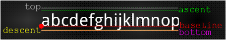
- float descent()：ベースラインより下にある文字の最低点までの距離を測定します。
- int breakText(char[] text, int index, int count, float maxWidth, float[] measuredWidth)：1行に何文字表示できるかを検出します。
- clearShadowLayer( )：影レイヤーをクリアします。 その他は自分でドキュメントを参照してください。
2)Canvas（キャンバス）：
ブラシが用意できたら、次はキャンバス（Canvas）です。何もないところに描くわけにはいきませんよね。よく使うメソッドは以下の通りです。
まずはコンストラクタです。Canvasのコンストラクタは2種類あります：
Canvas(): 空のキャンバスを作成します。setBitmap()メソッドを使用して、具体的に描画するキャンバスを設定できます。
Canvas(Bitmap bitmap): bitmapオブジェクトでキャンバスを作成し、内容をすべてbitmapに描画します。そのためbitmapはnullであってはなりません。
次に1.drawXXX()メソッド群：一定の座標値で現在の描画領域に図形を描画します。また、レイヤーは重なります。つまり、後から描画したレイヤーが先に描画したレイヤーを覆います。例えば：
- drawRect(RectF rect, Paint paint)：領域を描画します。引数1はRectFの領域です。
- drawPath(Path path, Paint paint)：パスを描画します。引数1はPathパスオブジェクトです。
- drawBitmap(Bitmap bitmap, Rect src, Rect dst, Paint paint)：画像を貼り付けます。引数1は通常のBitmapオブジェクト、引数2はソース領域（ここではbitmap）、引数3はターゲット領域（canvas上の位置とサイズ）、引数4はPaintブラシオブジェクトです。拡大縮小や引き伸ばしが使用される可能性があるため、元のRectがターゲットのRectと等しくない場合、パフォーマンスは大幅に低下します。
- drawLine(float startX, float startY, float stopX, float stopY, Paintpaint)：線を描画します。引数1は始点のx軸位置、引数2は始点のy軸位置、引数3は終点のx軸水平位置、引数4は終点のy軸垂直位置、最後の引数はPaintブラシオブジェクトです。
- drawPoint(float x, float y, Paint paint)：点を描画します。引数1は水平x軸、引数2は垂直y軸、3番目の引数はPaintオブジェクトです。
- drawText(String text, float x, floaty, Paint paint)：テキストをレンダリングします。Canvasクラスは上記の他に文字を描くこともできます。引数1はString型のテキスト、引数2はx軸、引数3はy軸、引数4はPaintオブジェクトです。
- drawOval(RectF oval, Paint paint)：楕円を描画します。引数1は走査領域、引数2はpaintオブジェクトです。
- drawCircle(float cx, float cy, float radius,Paint paint)：円を描画します。引数1は中心点のx軸、引数2は中心点のy軸、引数3は半径、引数4はpaintオブジェクトです。
- drawArc(RectF oval, float startAngle, float sweepAngle, boolean useCenter, Paint paint)： 弧を描画します。引数1はRectFオブジェクトで、矩形領域の楕円形の境界が形状・サイズ・弧を定義するために使用されます。引数2は弧の開始時の開始角度（度）、引数3は開始位置から時計回りに測定されるスキャン角（度）、引数4がtrueの場合は楕円の中心を含む弧になり、それを閉じます。falseの場合は単なる弧になります。引数5はPaintオブジェクトです。
2.clipXXX()メソッド群：現在の描画領域をクリップ（clip）して新しい描画領域を切り出します。この描画領域がcanvasオブジェクトの現在の描画領域になります。例：clipRect(new Rect())を呼び出すと、その矩形領域がcanvasの現在の描画領域になります。
3.save()和restore()メソッド：save( )：Canvasの状態を保存するために使います。saveの後、Canvasの平行移動、拡大縮小、回転、せん断、クリップなどの操作を呼び出すことができます！restore（）：Canvasの前に保存した状態を復元するために使います。save後にCanvasに対して実行した操作が、その後の描画に影響を与えるのを防ぎます。 save()とrestore()はペアで使用します（restoreはsaveより少なくてもよいが、多くしてはいけません）。restoreの呼び出し回数がsaveより多いとエラーになります！
4.translate(float dx, float dy)： 平行移動。キャンバスの座標原点を左右方向にx、上下方向にy移動させます。canvasのデフォルト位置は（0,0）です。
5.scale(float sx, float sy)：拡大。xは水平方向の拡大倍率、yは垂直方向の拡大倍率です。
6.rotate(float degrees)：回転。angleは回転角度を指し、時計回りに回転します。
3)Path（パス）
簡単に言えば点を打って、線で結ぶことです。Pathパスを作成したら、CanvasのdrawPath(path,paint) を呼び出して図形を描画できます。よく使うメソッドは次のとおりです：
- addArc(RectF oval, float startAngle, float sweepAngle：パスに多角形を追加します
- addCircle(float x, float y, float radius, Path.Direction dir)：pathに円を追加します
- addOval(RectF oval, Path.Direction dir)：楕円を追加します
- addRect(RectF rect, Path.Direction dir)：領域を追加します
- addRoundRect(RectF rect, float[] radii, Path.Direction dir)：角丸領域を追加します
- isEmpty()：パスが空かどうかを判定します
- transform(Matrix matrix)：行列変換を適用します
- transform(Matrix matrix, Path dst)：行列変換を適用し、結果を新しいパス、つまり2番目の引数に格納します。
より高度なエフェクトにはPathEffectクラスを使用できます！
いくつかのToメソッド：
- moveTo(float x, float y)：描画は行わず、ペンの移動にのみ使用します
- lineTo(float x, float y)：直線の描画に使います。デフォルトでは(0,0)から描画を開始し、moveToで移動します！ 例 mPath.lineTo(300, 300); canvas.drawPath(mPath, mPaint);
- quadTo(float x1, float y1, float x2, float y2)： 滑らかな曲線、つまりベジェ曲線の描画に使います。同様にmoveToと組み合わせて使用できます！
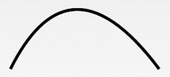
- rCubicTo(float x1, float y1, float x2, float y2, float x3, float y3) 同じくベジェ曲線の実装に使います。(x1,y1)は制御点、(x2,y2)も制御点、(x3,y3)は終了点です。 cubicToと同じですが、座標はこの輪郭上の現在の点を基準とした相対座標とみなされます。つまり制御点が1つ増えただけです。 上記の曲線を描画する場合： mPath.moveTo(100, 500); mPath.cubicTo(100, 500, 300, 100, 600, 500); 上記のmoveToを追加しない場合は、(0,0)を始点とし、(100,500)と(300,100)を制御点としてベジェ曲線を描画します。
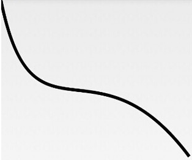
- arcTo(RectF oval, float startAngle, float sweepAngle)： 弧線を描画します（実際には円または楕円の一部を切り取ったものです）。ovalRectFは楕円を囲む矩形、startAngleは開始角度、sweepAngleは終了角度です。
2. 実際に試してみよう：
プロパティがこんなに多いので、やはり実際に手を動かしてやってみないと印象に残りませんよね。 えへへ、描画はView上かSurfaceView上かのどちらかで行います。ここではView上で描画しましょう。 Viewクラスを定義して、onDraw()内で描画処理を行います！
/**
* Created by Jay on 2015/10/15 0015.
*/
public class MyView extends View{
private Paint mPaint;
public MyView(Context context) {
super(context);
init();
}
public MyView(Context context, AttributeSet attrs) {
super(context, attrs);
init();
}
public MyView(Context context, AttributeSet attrs, int defStyleAttr) {
super(context, attrs, defStyleAttr);
init();
}
private void init(){
mPaint = new Paint();
mPaint.setAntiAlias(true); //抗锯齿
mPaint.setColor(getResources().getColor(R.color.puple));//画笔颜色
mPaint.setStyle(Paint.Style.FILL); //画笔风格
mPaint.setTextSize(36); //绘制文字大小，单位px
mPaint.setStrokeWidth(5); //画笔粗细
}
//重写该方法，在这里绘图
@Override
protected void onDraw(Canvas canvas) {
super.onDraw(canvas);
}
}
そしてレイアウト側でこのViewを設定するだけでOKです。以下のコードはすべてonDrawable内に記述します。
1）キャンバスの色を設定する：
canvas.drawColor(getResources().getColor(R.color.yellow)); //设置画布背景颜色
2）円を描画する：
canvas.drawCircle(200, 200, 100, mPaint); //画实心圆
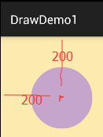
3）矩形を描画する：
canvas.drawRect(0, 0, 200, 100, mPaint); //画矩形
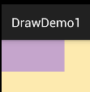
4）Bitmapを描画する：
canvas.drawBitmap(BitmapFactory.decodeResource(getResources(), R.mipmap.ic_launcher), 0, 0, mPaint);
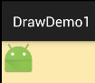
5）円弧領域を描画する：
canvas.drawArc(new RectF(0, 0, 100, 100),0,90,true,mPaint); //绘制弧形区域
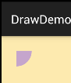
trueをfalseに変更した場合：
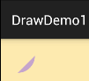
6）角丸矩形を描画する
canvas.drawRoundRect(new RectF(10,10,210,110),15,15,mPaint); //画圆角矩形
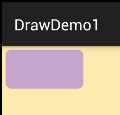
7）楕円を描画する
canvas.drawOval(new RectF(0,0,200,300),mPaint); //画椭圆
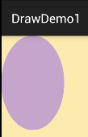
8）多角形を描画する：
Path path = new Path(); path.moveTo(10, 10); //移动到 坐标10,10 path.lineTo(100, 50); path.lineTo(200,40); path.lineTo(300, 20); path.lineTo(200, 10); path.lineTo(100, 70); path.lineTo(50, 40); path.close(); canvas.drawPath(path,mPaint);
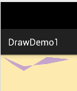
9）文字を描画する：
canvas.drawText("最喜欢看曹神日狗了~",50,50,mPaint); //绘制文字
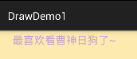
特定のPathに沿ってこれらの文字を描画することもできます：
Path path = new Path();
path.moveTo(50,50);
path.lineTo(100, 100);
path.lineTo(200, 200);
path.lineTo(300, 300);
path.close();
canvas.drawTextOnPath("最喜欢看曹神日狗了~", path, 50, 50, mPaint); //绘制文字
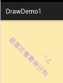
10）カスタム図形を描画する：
コードはネット上から引用したものです：
protected void onDraw(Canvas canvas) {
super.onDraw(canvas);
canvas.translate(canvas.getWidth()/2, 200); //将位置移动画纸的坐标点:150,150
canvas.drawCircle(0, 0, 100, mPaint); //画圆圈
//使用path绘制路径文字
canvas.save();
canvas.translate(-75, -75);
Path path = new Path();
path.addArc(new RectF(0,0,150,150), -180, 180);
Paint citePaint = new Paint(mPaint);
citePaint.setTextSize(14);
citePaint.setStrokeWidth(1);
canvas.drawTextOnPath("绘制表盘~", path, 28, 0, citePaint);
canvas.restore();
Paint tmpPaint = new Paint(mPaint); //小刻度画笔对象
tmpPaint.setStrokeWidth(1);
float y=100;
int count = 60; //总刻度数
for(int i=0 ; i <count ; i++){
if(i%5 == 0){
canvas.drawLine(0f, y, 0, y+12f, mPaint);
canvas.drawText(String.valueOf(i/5+1), -4f, y+25f, tmpPaint);
}else{
canvas.drawLine(0f, y, 0f, y +5f, tmpPaint);
}
canvas.rotate(360/count,0f,0f); //旋转画纸
}
//绘制指针
tmpPaint.setColor(Color.GRAY);
tmpPaint.setStrokeWidth(4);
canvas.drawCircle(0, 0, 7, tmpPaint);
tmpPaint.setStyle(Paint.Style.FILL);
tmpPaint.setColor(Color.YELLOW);
canvas.drawCircle(0, 0, 5, tmpPaint);
canvas.drawLine(0, 10, 0, -65, mPaint);
}
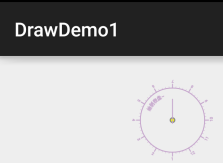
この節のまとめ：
この節では、android.graphicsインターフェースクラスにある3つの描画API：Canvas（キャンバス）、Paint（ペイント）、Path（パス）について学びました。メソッドはたくさんあるので、無理に暗記しないで、使うときに調べればいいです。ここではまず大まかなイメージを持っておくだけで十分です。カスタムコントロールのところでゆっくり見ていきましょう。では、今回はこのくらいにします。ありがとうございます。
クリックしてノートを共有
<p style="font-size:14px;">ノートはこの記事の内容を拡張したものである必要があります！</p><br> <p style="font-size:12px;"><a href="../tougao.html" target="_blank">記事の投稿は、こちらをクリック</a></p> <p style="font-size:14px;"><a href="./runoob-user-test-intro.html" target="_blank">登録招待コードの取得方法</a></p> <h3 class="text-muted"><i class="fa fa-info-circle" aria-hidden="true"></i> ノートを共有する前に<a href=".." class="runoob-pop">ログイン</a>が必要です！</h3> <p><a href="./runoob-user-test-intro.html" target="_blank">登録招待コードの取得方法</a></p>